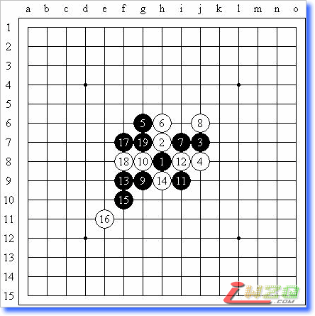
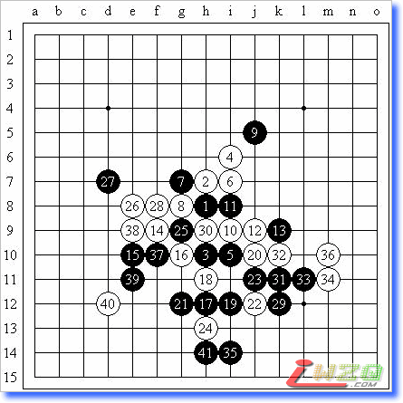
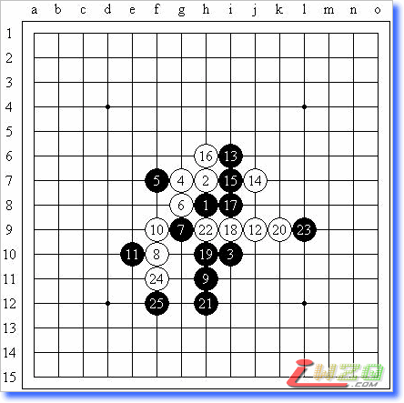
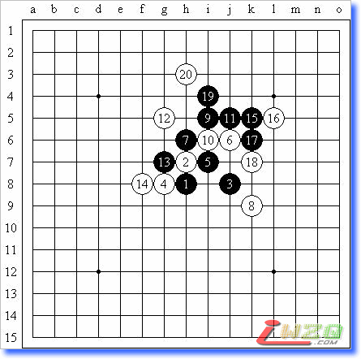
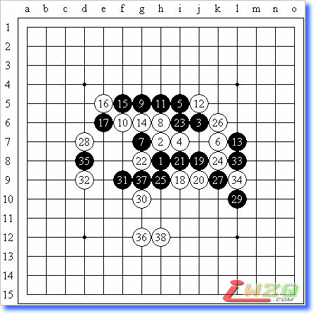
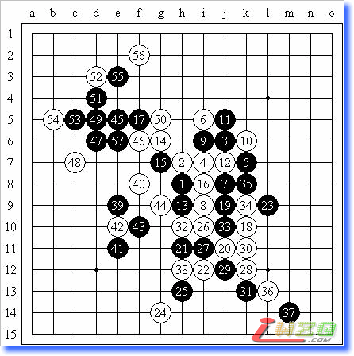

QQ小擂台~~~
#1 QQ小擂台~~~作者：有志青年 发表时间：2008-6-30 12:58:58
原文地址：http://hi.baidu.com/%C6%C1%B1%CE/blog/item/bdbdacdecdb6045dccbf1a8a.html
今天（6月29日）上午在群里碰到小鸟和云飞，正好下午都有空，三个人就约着下下棋~~~下午两点多三个人同时出现……飘进QQ三手二，按照擂台赛的形式开始下棋。不过说来有趣，这几盘棋里倒是没有过和棋。好久没下得这么开心了，呵呵~
总共八盘棋，我和云飞最先下的，对阵表及结果如下：
李 一（【北京】屏蔽） 负 胜 胜 胜 负 胜
仇云飞（怡红山庄云飞） 胜 胜 负 胜 负
芦 海（【茗弈】非鸟） 负 负 负 胜 负
QQ三手交换五手两打房间2

据说这个白6的胜法还是挺复杂的，据说7-i5猥琐八卦防是必胜，不过对于这个显而易见的黑7，白8过于嚣张，算了半天11-13，12-14的变化，但实战11冷静，好像基本必胜了……
QQ三手交换五手两打房间2
小鸟不甘示弱，至黑11同上一盘一样的变化，我不知道他找到什么强防了，不过黑11之后的几个强防云飞也都算过了，小鸟速速败下阵来……
QQ三手交换五手两打房间2

白12的变化，第一次遇到还是在陈伟老师的一局棋评里，现在看来还有可研究之处。13~16都是正常应对，黑17的变化据说是最善手。19逆止，20-23白棋简单必胜。以下交换至白24，黑25造一点威胁，但主要目的还是先手占据h6——我对这个局面的理解就是白棋占到该点之后有机会再占h5，非常强势。不过白26一出，我就爽了一下，估计白28也就是实战的这个选点了，以下早已计算好的VCT，38-c8也没什么用。不过目前来看，30外止的话应该没什么问题呢？呵呵……
QQ三手交换五手两打房间2

神奇的一局……看我在那想开局，芦海就猜出我要开山月……白4通新月是一种考虑，或是这个变化下6-22的防守，不过令人惊讶的是他没换……这个局面强防颇多，但是我也不会定式嘛……黑11控制，黑19大恶手！感觉20-21后黑棋优势全失，不料白20活三……黑21高高兴兴跳出来，白棋就很难防守了，并且没有任何进攻手段~白24后黑25，黑必胜。
此局之后云飞消失，我们推测他在厕所……于是我和芦海又来了一盘……
QQ三手交换五手两打房间2

很白痴的一局……两个不会定式的家伙对着这个局面乱发感慨。白6是我去年团体赛遇到的一个变化，当时黑7都走错了。实战通寒星正确！黑9错！有盘端问题黑棋无法必胜，9-i9正确，胜法也相当复杂。实战黑棋没有前途。
QQ三手交换五手两打房间2

本应是至少和棋的局面，被我走死掉了。11、13是昨天刚从小鸟那里学到的变化，黑17后黑棋可战。20是清醒的一手。黑25算一个问题手！25-28极好的机会，没有把握住，这里白26应该有更好的手段，黑29就是糊涂的一手，离盘端太近局部不能胜，白30争先的好棋！以下防守困难，白棋的空间太大了。
QQ三手交换五手两打房间2

黑5的变化，黑13有趣的一手！黑17定型后感觉白有必胜的机会，因为和5-h6的一个变化形状太像了，可惜黑29后白棋无胜。右下局部交换之后，白38是否可以更积极一些？黑39以下黑棋终于抢到机会占据黑45位，黑47恰当，白棋难防！
QQ三手交换五手两打房间2
#2 Re:QQ小擂台~~~作者：17号蓝星仔 发表时间：2008-6-30 15:23:57
李一对芦海的金星局怎么两个用黑子的
［ 有志青年 于 2008-6-30 16:33:30 时奖励此帖[金币加 20 威望加1］
#3 Re:QQ小擂台~~~作者：有志青年 发表时间：2008-6-30 16:33:33
这个要等屏蔽亲自来回复修改意见了哟。#4 Re:QQ小擂台~~~作者：屏蔽 发表时间：2008-6-30 23:24:22

怎么会有这样的错误，不可思议……那盘我是白棋。